Chapter 3 Software
👉 Customize the Vibe Software and get the best layout interface to fit any operator’s needs and preferences.
This chapter provides an overview of Vibe’s layout and GUI (Graphical User Interface).
Chapter index:
3.1 Interface
Vibe has a multi-touch based interface, using simple gestures for selection and navigation.
Supported Gestures:
◾ One finger or left mouse click to select.
◾ Two fingers or right mouse click to swipe and scroll.
◾ Long finger press or left mouse click for Drag&Drop.
◾ Long finger press or left mouse click on objects for Quick Menu Actions.
◾ Multi-selection via ️️⤴ ⤵ (right->up /right->down) shaped gestures.
Vibe directly supports up to 4 monitors, two embedded and two external. (Additional monitors may be added by using Display Port 1.2 or higher and MST splitter for a total of 4 external monitors at 1920 x 1080 resolution).
The small embedded screen called Smart Screen is dedicated to context sensitive fixture information and interactive parameter pickers. It is used for Editor programming.
The large embedded screen called Vibe Main Screen is general purpose, as well as the external monitors that may be connected. It is used for most of the patch, program and playback operations, collecting all the views on fully customizable pages that can be saved into user layout files.
Each screen, excluding the Smart Screen, can have one Window or more, with an independent set of Pages.
Each window can contain up to 12 Pages divided in 3 different Page Types:
up to 4 Pages for PATCH
up to 4 Pages for PROGRAM
up to 4 Pages for PLAYBACK
3.1.1 Smart Screen
The 11.6” multi-touch monitor embedded on the right Editor section of the Vibe 2 screen console models is referred to as the Smart Screen.
Smart Screen
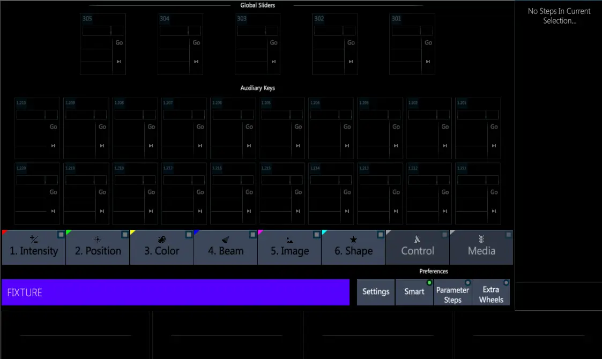
On Vibe multi-screen console models the Smart Screen position is fixed on the dedicated monitor. The Smart Screen View cannot be moved on the other screens and the configuration of this screen cannot be customized.
On Vibe single-screen console models and on Vibe PC the Smart Screen is a View, so it can be positioned on any layout Page.
Vibe Smart Screen has different options that allow o use it both for the fixtures’ parameters manipulation and for the controllers’ playback.
The Bank keys (intensity, Position, color, etc…) give access to the selected fixtures’s parameter controls.
The line on the bottom of the Smart Screen, called Echoline, shows the current fixture selection or the syntax.
On the right side of the echoline there are the Smart Screen’s options and settings.
The lower part and the right side of the screen show the parameters that may be controlled, depending on the selected fixtures and banks and according to the encoder wheels and extra wheels assignment.
3.1.2 Toolbars
Vibe Toolbar is a function line that may be placed either on the top or the bottom of the Vibe main screens.
The left side of the Toolbar contains the Vibe Menu button, the Home Pages buttons, and the Command Line that shows the current syntax.
The right side of the Toolbar, also referred to as the Editor Toolbar, contains a set of interactive buttons that are used to access additional editor commands.
The Editor Toolbar shows a different set of buttons according to the programming syntax.
Patch Toolbar

Program Toolbar
The functions of the Toolbar buttons are described in the following chapters.
3.2 Vibe Menu
Vibe Menu can be opened at any time by tapping the {VIBE} key on the Toolbar.
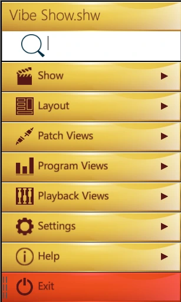
The Vibe Menu is a hierarchical menu containing logically grouped submenus.
It is used to access common system functions such as Save Show and Exit, as well as to configure the Layout of the Pages.
It contains all the Views listed in dedicated submenus.
The upper part of the Menu shows the currently loaded show file.
The search field may be used to filter and find the needed view by writing the view’s name in it.
3.3 Pages
Vibe has 3 types of Pages:
Patch Page
Program Page
Playback Page
The page buttons are used to switch between the different pages and they are specific to the monitor that has focus (the last touched or mouse selected screen).
[View] opens the Page View and the button color coding shows the currently focused monitor.
👉 Paging is independent for each window, but it can be synchronized by pressing [Shift]+[View]
[Patch Page] or the F2 keyboard button switches between the existing Patch Pages.
[Program Page] or the F3 keyboard button switches between the existing Program Pages.
[Playback Page] or the F4 keyboard button switches between the existing Playback Pages.
All the Pages are organized in the Page View that can be accesses either by pressing the [VIEW] button or by tapping the {VIBE} Menu and then the {PAGES} key on the Toolbar.
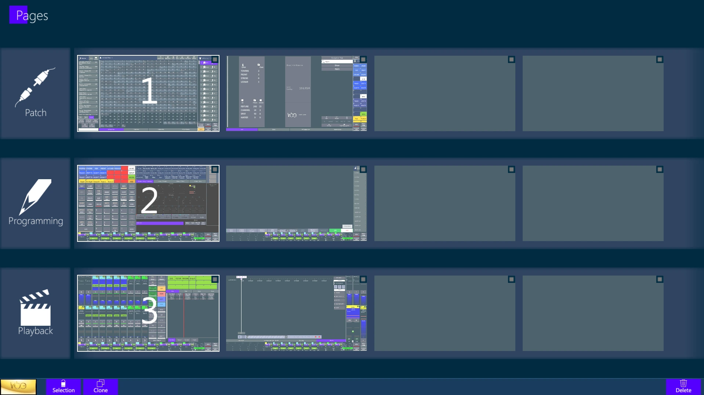
All Pages can be completely customized by adding, sizing and positioning the Views listed inside the Vibe Menu, independently from where the view is located inside the Vibe Menu.
Pages can also be moved from one type to another, as soon as one of the 4 spaces per type is available.
The Pages View can be unlocked through the Selection button in order to assign Home Pages, reorder the pages with drag and drop, Clone or Delete existent Pages.
👉 On the Console it is recommended to set views such as the System Status and the Playback Status on the bottom of the Program and Playback pages, to have them in correspondence to the physical controllers.
3.3.1 Home Pages
Home page buttons, located on the Toolbar, are a fast way to recall up to three main pages.
F1 keyboard button switches between the three Home Pages.
The currently active Home Page is shown in Green.
Any page can be stored as a Home Page on the Page View.
The Home Pages may be assigned when the screen is in Page View and it is unlocked by tapping the Selection key.
3.3.2 Clone Pages
Clone pages for a faster building of a similar layout page.
Any page can be cloned as long as there is room available.
The Clone Pages key is displayed on the Toolbar, near the menu, when the screen is in Page View and it is unlocked by tapping the Selection key.
3.3.3 External Windows
Any additional window that is added to the Vibe layout, maybe to be placed on an external monitor, will have exactly the same possibilities of the Main window.
Each external window also has:
3 page types (Patch, Prog, Play-B) with up to 4 pages each,
3 Home Pages directly accessible throght the Home keys,
A Toolbar showing the Vibe Manu and Command Line.
The Page buttons operate on the currently active window, the last one selected with a touch or mouse input.
The Vibe Menu of the external windows shows the Close button instead of the Exit button. Tapping on it will close the window without exiting the software.
Vibe Layout files save all the windows that are currently shown in the Vibe workspace.
3.4 Views
Vibe Views are listed inside the Vibe Menu, into the Patch, Program, Playback Views submenus.
Any View can be added to any Page and stored in the layout.
Views can be moved between different pages. While editing the layout and dragging a view, press a Page button to switch the current page and the view will follow, making it possible to add it to the visualized page.
Views can be resized and tabbed together, but each view has its own dimension limits.
To edit the placement of views on the layout, the {Lock} icon near the {VIBE} menu key must be toggled to unlock the layout editing. After changes are made, it must be toggled again to lock the layout and allow normal usage.
To configure the layout, any object in the Patch, Program and Playback Views hierarchical sub-menus can be tapped to open the view on a blank portion of the current page, or can be dragged and dropped into the page surface. Once on the page it may be moved or sized freely, space permitting. This operation automatically unlocks the layout editing.
If an object is dragged on top of another, both will turn green showing it is possible to tab them and create a tabbed view. Keep a tabbed view pressed to extract an object from the tab an move it separately.
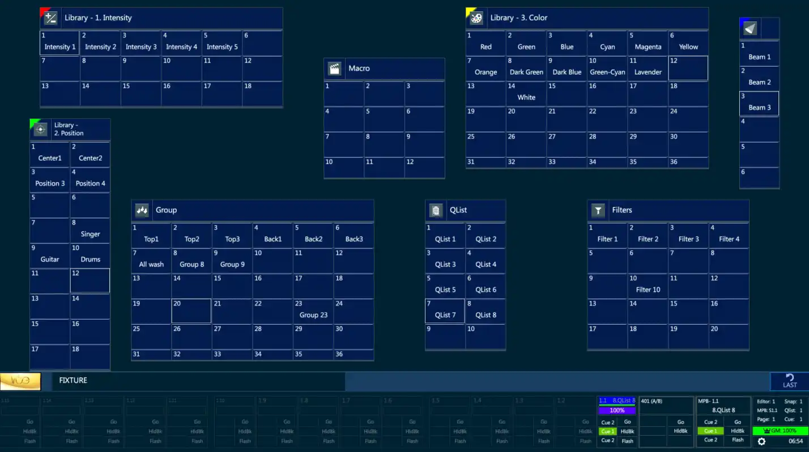
👉 Use the Quick Layout Actions menu to directly access the View’s lists in Vibe Menu, Lock and Unlock the Layout, open the Page View or the Layout Settings popup. Quick Layout Actions may be opened through a long press gesture either on the Toolbar or on any empty space of a page.
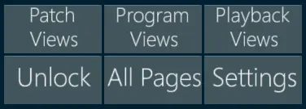
Here is the complete list of all the views that can be added to the layout pages to configure and customize the Vibe workspace.
3.4.1 Patch Views
Fixtures - The list of all the fixtures created in the show.
Sets - The list of all the sets, including the default sets (Fixture, Channel, Spot, Matrix, Media Server) and the custom sets.
Devices - The list of all the devices imported in the show.
Universes - The list of all the DMX universes.
Curves - The list of all the curve profiles, including the default curves and the custom ones.
Fixture View - The table of the created fixtures, with ID, patch and device information.
Address View - The table of the DMX addresses, showing the fixtures and parameters patch and properties.
Trackers View - The table listing the trackers and their patch and position coordinates.
Universe View - The table of the DMX universes that allows to patch by dragging the cells.
DMX In/Out View - The table that shows the current values of the DMX output and input universes.
OSC View - The list and trigger of the OSC commands.
External Devices - The space to check and configure connected devices, such as ePort nodes and RDM fixtures.
Selection - The box used to grab the fixture selection and drag it on the universe view.
3.4.2 Program Views
Smart Screen - The view that contains the graphical editor screen.
Encoders - The view that contains the encoders in the lower part of the Smart Screen.
Hard Keys - The virtual version of the hard keys panel.
Single Buttons - This sub-menu collects all the virtual buttons.
Single Button - The list of all the virtual button.
Layout Page Buttons - The virtual buttons used for page navigation: View, Patch, Program, Playback.
Controller Page Buttons - The virtual buttons used for controller navigation: Slider and Qkey Page Up/Down.
Settings Button - The virtual buttons used to access the settings popups.
Softkeys - This sub-menu collects the softkey views of the objects.
Group - The softkey view of the Groups.
Qlist - The softkey view of the Qlists.
Scene - The softkey view of the Scenes.
Snap - The softkey view of the Snaps.
Filter - The softkey view of the Filters.
Macro - The softkey view of the Macros.
Library - This sub-menu collects the softkey views of the libraries.
Intensity - The softkey view of the Intensity Bank libraries.
Position - The softkey view of the Position Bank libraries.
Color - The softkey view of the Color Bank libraries.
Beam - The softkey view of the Beam Bank libraries.
Image - The softkey view of the Image Bank libraries.
Shape - The softkey view of the Shape Bank libraries.
Custom - The softkey view of the Custom libraries.
Effect - The softkey view of the Effect libraries.
Context - The dynamic softkey view showing contents based on the current syntax.
Live - The table view that shows the live status of all the fixtures’ parameters.
👉 Live view have 4 different visualization modes, allowing to have or not have fixtures divided by Headers per Device and to show or not show SubDevices. These modes may also be switched later in the Live View Settings popup.
Live Parameters - The icon view that shows the live status of the fixtures’ parameters.
Qlist Tracksheet - The table used to check, edit and update the Qlists and Cues stored in the show.
Exam - The worktree used to check all the objects stored in the show.
Topo - The space to create interactive topographical views used to select the fixtures and trigger the objects.
Timeline - The space to record and trigger time-code based timelines.
Pixel Mapper - The space to create pixel mappers to position the fixtures into the mapper’s grid and visualize the incoming video source.
3.4.3 Playback Views
A/B Crossfader - The virtual version of the A/B crossfader.
Slider - The virtual version of the Slider controllers: Set, Fader, 3 Buttons, Button, 5 Sets.
QKey - The virtual version of the Qkey controllers: Set, Fader, Button, 5 Sets.
AuxKey - The virtual version of the AuxKey controllers: Set, Fader, Button, 5 Sets.
Global Slider - The virtual version of the Global Slider controllers: Set, Fader, Button.
Master Keys - The virtual Master Keys panel.
Operation Keys - The virtual version of the Operation Keys panel.
Command Keys - The virtual version of the Command Keys panel.
Live Controller - The tabbed view that shows the live status of a target controller and its content.
System Status - The box that shows the current status of the system, also used to access the system setting.
Playback Status - The box that shows the current status of a single controller, also used to access the controller’s setting.
Playback Status Set - The box that shows the current status of a set of 5 controllers, also used to access the controller’s setting.
3.4.4 View Settings
Some views have specific settings that can be set from the view settings popup, opened from the toolbar when the layout is unlocked.
View settings can be accessed when layout is Unlocked, by selecting the view and tapping the buttons on the toolbar. These settings are applied to the selected view.
Toggle Scrollbar: add or remove a scrollbar to/from the view, if available.
Horizontal Scrollbar: add or remove an horizonal scrollbar to/from the view, if available.
Toggle Frame: add or remove the frame to/from the view.
Frame Color: customize the view’s frame for a better graphical separation between the views.
Softkey Settings: any softkey view can be graphically customized by selecting it in layout edit mode and opening the settings popup with the {Settings} button on the toolbar.
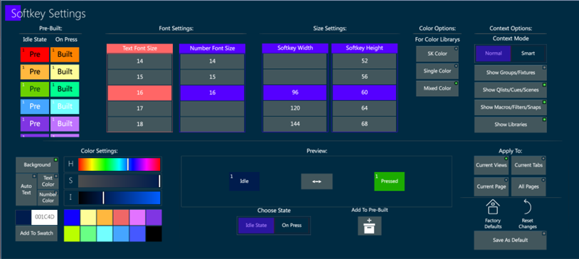
Softkey settings are used to change the size, font and color of the softkeys’ text and background.
The settings can be saved as Pre-Built and applied to the other views of the same tab, page, or to the softkey views in all the pages.
The settings can be saved as default, and it is always possible to come back to the default or to reset the changes.
Some special color options are available to show color library softkeys with the colors that are stored in the library.
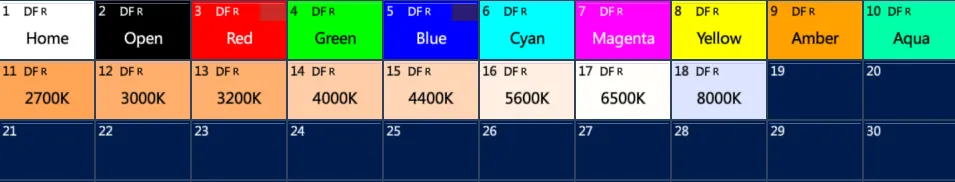
The auto text color option in Softkey Settings popup automatically sets the softkey’s text color in black or white in contrast with the softkey’s background color, to make it always visible.
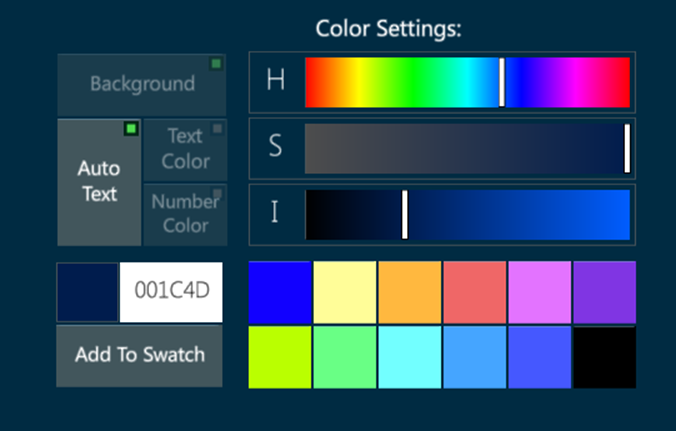
Context Options only apply to the Context view. This view can show or hide the visualized objects depending on the user’s settings or on the smart option.
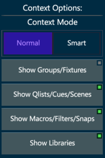
The Context Normal Mode filters the visualized objects according to the enabled buttons.
The Context Smart Mode filters the visualized objects automatically avoiding the softkeys that are already visible in the page.
Single Button Settings: any single button view can be graphically customized by selecting it in layout edit mode and opening the settings popup with the {Settings} button on the toolbar.
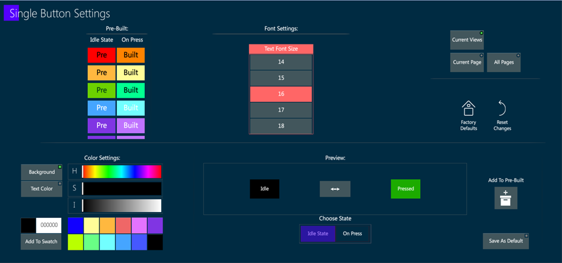
Specific settings, such as background color and text color, size, or autotext option, either in Idle State or On Press can be assigned to each single button.
The settings can be saved as Pre-Built and applied to the other single buttons of the same tab, page, or to the buttons in all the pages.
The settings can be saved as default, and it is always possible to come back to the default or to reset the changes.
Views Menu is availeble on some views, such as Live, Topo and Timeline.
The View’s menu can be closed when the layout is Locked by tapping the Close Menu button.
The Open Menu button can be placed wherever on the view with a long click gesture and drag.
3.5 Layouts
After all pages and views are configured, the layout configuration can be saved into a Layout file by tapping the {VIBE} Menu and then the {LAYOUT} key.
After configuring new windows on the external monitors, a layout file should be saved to preserve the external monitor layout on reboot. Layout files store the configuration of external monitors and if the system is booted without the expected external monitor a warning message will appear.
Layout files, containing all the graphical settings of pages and views, are loaded independently from the Show files, containing all the stored data.
Layout files also include the interface configuration regarding the external windows.
If using different console models or systems with wings connected it may be useful to have an edited layout in order to match the controllers or to visualize on the screen what is not available on the panel. For example: the Vibe M and the Vibey have 10 slider sets while the Vibe LX has 15 of them, a Smart Screen may not be needed when using a Vibe M or LX because it is already available on the dedicated monitor, the Editor Hardkeys as well as most of the physical buttons may be very useful on the Vibe PC especially if there is not a Vibe PC Wing connected.
👉 Layout files are particularly useful when the same desk is managed by different operators; each user can load his own customized layout without losing any show data programmed by the previous user.
👉 Layout files may be slightly different depending on the kind of show that is going to be programmed, for example theatrical plays are very different from live concerts, so they may require customized views in order to get a more comfortable interface which allows visualizing just the contents and data that the user may need.
3.5.1 Layout Settings
Layout Settings can be accessed when layout is Locked, by tapping the Vibe Menu and then the {Setting} button on the toolbar, near the Lock and Pages buttons. These settings are applied as defaults to all the Pages and Views.
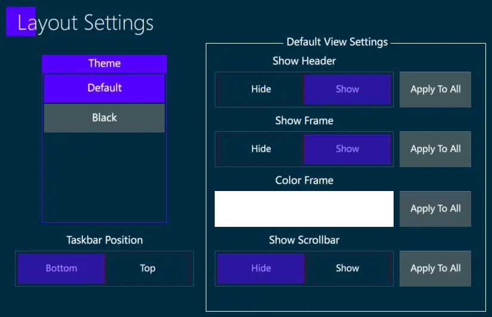
It is possible to change the Vibe Theme, to move the Toolbar on top or bottom position on all the pages, and to set Default View Settings for the Headers, the Frames and the Scrollbars.